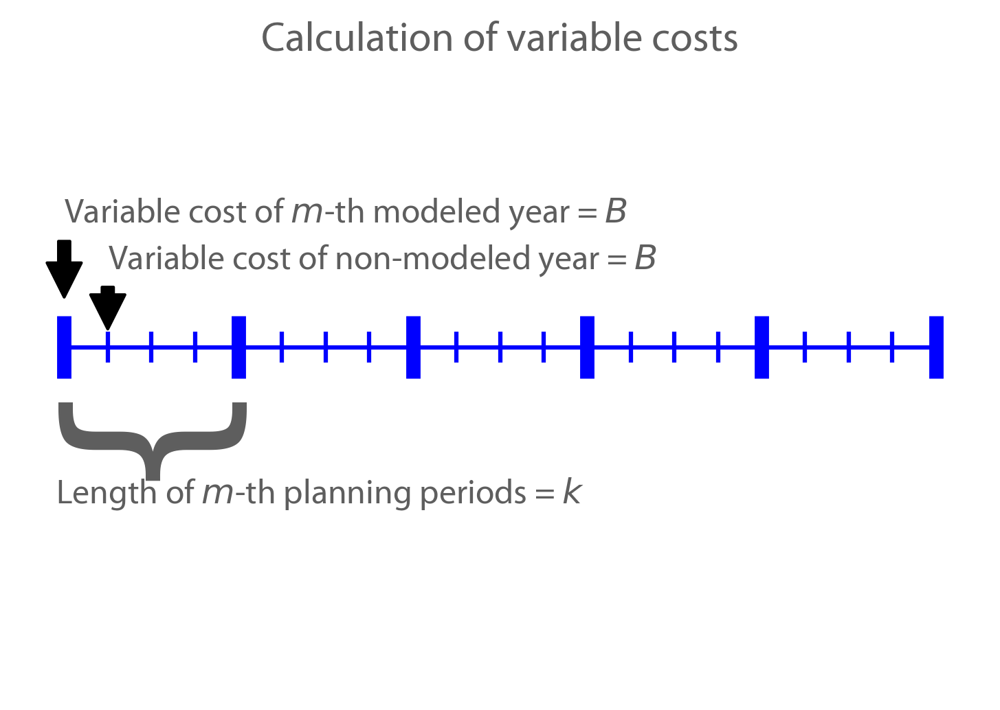
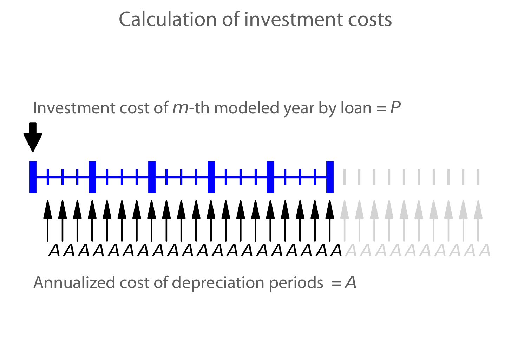

Mathematical Notations¶
This page provides a detailed description of the mathematical notations used for formulating the model's objective function and constraints.
Set List¶
Set |
Description |
Unit |
|---|---|---|
\(te\) |
Technology |
|
\(h\) or \(t\) |
Hour |
|
\(y\) |
Year |
NIL |
\(m\) |
Time period |
|
\(z\) |
Zone |
NIL |
Variable List¶
Variable |
Description |
Unit |
|---|---|---|
\(\text{cost}\) |
Total cost of whole energy system. |
|
\(\text{cost}^\text{var}\) |
Variable Operation and Maintenance (O&M) cost. |
|
\(\text{cost}^\text{fix}\) |
Fixed O&M cost. |
|
\(\text{cost}^\text{newtech}\) |
Investment cost of technologies. |
|
\(\text{cost}^\text{newline}\) |
Investment cost of transmission lines |
|
\(\text{gen}_{h,m,y,z,te}\) |
Generating capacity of the \(te\)-th technology, in the \(z\)-th zone, in the \(y\)-th year, for the \(m\) time period, and in the \(h\)-th hour. |
|
\(\text{cap}^\text{existing}_{y,z,te}\) |
Existing installed capacity of the \(te\)-th technology, in the \(z\)-th zone, and in the \(y\)-th year. |
NIL |
\(\text{cap}^\text{newtech}_{y,z,te}\) |
Newly-built installed capacity of the \(te\)-th technology, in the \(z\)-th zone, and in the \(y\)-th year. |
NIL |
\(\text{cap}^\text{newline}_{y,z_s,z_o}\) |
Newly-built transmission line capacity from the \(z_s\)-th zone to the \(z_o\)-th zone, and in the \(y\)-th year. |
NIL |
\(\text{cap}^\text{remaining}_{y,z,te}\) |
Remaining capacity of the \(te\)-th technology, in the \(z\)-th zone, and in the \(y\)-th year. |
NIL |
\(\text{carbon}^\text{tech}_{y,te}\) |
Carbon emission of the \(te\)-th technology for all zones, and in the \(y\)-th year |
NIL |
\(\text{slack}_{h,y,z}\) |
Unserved demand in the \(z\)-th zone, in the \(y\)-th year, and in the \(h\)-th hour. |
NIL |
\(\text{trans}^\text{import}_{h,y,z1,z}\) |
Generation output imported from the \(z1\)-th zone to the \(z\)-th zone, in the \(y\)-th year, and in the \(h\)-th hour. |
NIL |
\(\text{cap}^\text{retire}_{y,z,te}\) |
Retiring capacity of the \(te\)-th technology, in the \(z\)-th zone, and in the \(y\)-th year. |
|
\(\text{storage}^\text{level}_{y,z,te}\) |
Storage level of the \(te\)-th technology, in the \(z\)-th zone, and in the \(y\)-th year. |
|
\(\text{consumption}_{h,y,z,te}\) |
Cost of fuel consumption of the \(te\)-th technology, in the \(z\)-th zone, in the \(y\)-th year, and in the \(h\)-th hour. |
|
\(\text{gen}^\text{up}_{h,y,z,te}\) |
Output of change upward of the \(te\)-th technology, in the \(z\)-th zone, in the \(y\)-th year, and in the \(h\)-th hour. |
|
\(\text{gen}^\text{down}_{h,y,z,te}\) |
Output of change downward of the \(te\)-th technology, in the \(z\)-th zone, in the \(y\)-th year, and in the \(h\)-th hour. |
|
Parameter List¶
Parameter |
Description |
Unit |
|---|---|---|
\(C^\text{var}_{y,te}\) |
Variable O&M cost of the \(te\)-th technology, and in the \(y\)-th year. |
|
\(C^\text{fix}_{y,te}\) |
Fixed O&M cost of the \(te\)-th technology, and in the \(y\)-th year. |
|
\(C^\text{newtech}_{y,te}\) |
Investment cost of the \(te\)-th technology, and in the \(y\)-th year. |
|
\(C^\text{newline}_{y,te}\) |
Investment cost of the \(te\)-th technology, and in the \(y\)-th year. |
|
\(\text{DF}_{y}\) |
Discount factor in the \(y\)-th year. |
NIL |
\(\text{carbon}_{y}\) |
Carbon emission in the \(y\)-th year. |
|
\(\overline{\text{carbon}}_y\) |
Upper bound of carbon emission for all zones in the \(y\)-th year. |
|
\(\text{Demand}_{t,m,y,z}\) |
Load demand in the \(z\)-th zone, in the \(y\)-th year, for the \(m\) time period, and in the \(t\)-th hour. |
|
\(\text{Effi}^\text{trans}_{z1,z,y}\) |
Efficiency of transmission line in the \(y\)-th year, and from the \(z_1\)-th zone to the \(z\)-th zone |
NIL |
\(\text{Installed}^\text{init}_{z,te}\) |
Installed capacity of the \(te\)-th technology, and in the \(z\)-th zone. |
|
\(\text{Effi}^\text{storage}_{y,te}\) |
Energy storage conversion efficiency of the \(te\)-th technology, and in the \(y\)-th year. |
NIL |
\(\text{Storage}^\text{init}_{z}\) |
Storage level in the \(z\)-th zone. |
|
\(\text{Storage}^\text{end}_{y, z}\) |
Minimum storage level in the \(z\)-th zone, and in the \(y\)-th year. |
|
\(R^\text{up}_{te}\) |
Maximum upward ramping ratio of the \(te\)-th technology. |
NIL |
\(R^\text{down}_{te}\) |
Maximum downward ramping ratio of the \(te\)-th technology. |
NIL |
\(\text{cap}^\text{factor}_{h,z,te}\) |
Capacity factor of the \(te\)-th technology, in the \(z\)-th zone, and in the \(h\)-th hour. |
NIL |
Objective Functions¶
Costs¶
The objective function of the model is to minimize the net present value of the system's cost. This includes investment cost, fixed O&M cost, variable cost and fuel cost by cost type, technology cost, transmission line cost by the source of cost, and operation cost and planning cost by the source of cost.
The cost equations are defined as follows:
The variables are defined as follows:
Variable |
Description |
Unit |
|---|---|---|
\(\text{cost}\) |
Total cost. |
|
\(\text{cost}_\text{tech}^\text{var}\) |
Variable cost of technologies. |
|
\(\text{cost}_\text{line}^\text{var}\) |
Variable cost of transmission lines. |
|
\(\text{cost}^\text{fuel}\) |
Fuel cost of technologies. |
|
\(\text{cost}_\text{tech}^\text{fix}\) |
Fixed cost of technologies. |
|
\(\text{cost}_\text{line}^\text{fix}\) |
Fixed cost of transmission lines. |
|
\(\text{cost}_{tech}^{inv}\) |
Investment cost of technologies. |
|
\(\text{cost}_\text{line}^\text{inv}\) |
Investment cost of transmission lines. |
|
\(\text{gen}_{t,m,y,z,te}\) |
Generation electricity of the \(te\)-th technology, in the \(z\)-th zone, in the \(y\)-th year, for the \(m\) time period, and in the \(t\)-th hour. |
|
\(\text{export}_{t,m,y,z_s,z_o}\) |
Transmission electricity from the \(z_s\)-th zone to the \(z_o\)-th zone, in the \(y\)-th year, for the \(m\) time period, and in the \(t\)-th hour. |
|
\(\text{cap}^\text{existing-tech}_{y,z,te}\) |
Existing installed capacity of the \(te\)-th technology, in the \(z\)-th zone, and in the \(y\)-th year. |
|
\(\text{cap}^\text{existing-line}_{y,z_s,z_o}\) |
Existing transmission capacity from the \(z_s\)-th zone to the \(z_o\)-th zone, and in the \(y\)-th year. |
|
\(\text{cap}^\text{tech-inv}_{y,z,te}\) |
Newly-build installed capacity of the \(te\)-th technology, in the \(z\)-th zone, and in the \(y\)-th year. |
|
\(\text{cap}^\text{line-inv}_{y,z_s,z_o}\) |
Newly-build capacity of transmission line from the \(z_s\)-th zone to the \(z_o\)-th zone, and in the \(y\)-th year. |
|
\(\text{factor}^\text{var}_{y}\) |
Variable cost economic factor in the \(y\)-th year. |
NIL |
\(\text{factor}^\text{fix}_{y}\) |
Fixed cost economic factor in the \(y\)-th year. |
NIL |
\(\text{factor}^\text{inv}_{y}\) |
Investment cost economic factor in the \(y\)-th year. |
NIL |
The parameters are defined as follows:
Parameter |
Description |
Unit |
|---|---|---|
\(C_{y,z,te}^\text{tech-var}\) |
Variable cost of unit capacity of the \(te\)-th technology, in the \(z\)-th zone, and in the \(y\)-th year. |
|
\(C_{y,z}^\text{line-var}\) |
Variable cost of unit capacity of transmission line in the \(z\)-th zone, and in the \(y\)-th year. |
|
\(C_{y,z,te}^\text{fuel}\) |
Fuel cost of unit generation electricity of the \(te\)-th technology, in the \(z\)-th zone, and in the \(y\)-th year. |
|
\(C_{y,z,te}^\text{tech-fix}\) |
Fixed cost of unit capacity of the \(te\)-th technology, in the \(z\)-th zone, and in the \(y\)-th year. |
|
\(C_{y,z_s,z_o}^\text{line-fix}\) |
Fixed cost of unit capacity of transmission line from the \(z_s\)-th zone to the \(z_o\)-th zone, and in the \(y\)-th year. |
|
\(C_{y,z,te}^\text{tech-inv}\) |
Investment cost of unit capacity of the \(te\)-th technology, in the \(z\)-th zone, and in the \(y\)-th year. |
|
\(C_{y,z_s,z_o}^\text{line-inv}\) |
Investment cost of transmission lines from the \(z_s\)-th zone to the \(z_o\)-th zone, and in the \(y\)-th year. |
|
\(\text{Weight}\) |
Proportion of selected scheduling period in a year (8760 hours) that is \(\frac{H\times M}{8760}\). |
NIL |
Factors¶
To account for the variable factor, fixed factor, and investment factor, we need to convert all future costs to their net present value. This means adjusting for the time value of money so that all costs are expressed in terms of today's dollars.
We also assume that variable cost and fixed cost for non-modelled years are assumed to be equal to the cost of the last modelled year preceding them. This allows for consistent comparison across different time periods and technologies.
Variable Factor
{kind=link}
Given the following:
Variable cost of modeled year: \(B\)
Discount rate: \(r\)
\(m\)-th modeled year: \(m = y - y_\text{min}\)
Depreciation periods: \(n\)
The total present value can be calculated as follows:
And we can calculate the variable factor as follows:
Fixed Factor
We can equate the fixed factor with the variable factor as follows:
Investment Factor
{kind=link}
Given the following:
Weighted Average Cost of Capital (WACC, or otherwise known as the interest rate): \(i\)
Discount rate: \(r\)
\(m\)-th modeled year: \(m = y - y_\text{min}\)
Length of \(m\)-th planning periods: \(k\)
The total present value can be calculated as follows:
From the above, we can solve for the annualized cost of depreciation periods, \(A\), as:
The capital recovery factor is then calculated as:
Let's focus on the time periods that fall within the modelled time horizon (indicated in black colour). We can calculate the length of time periods, \(k\), as follows:
Using \(k\), we can calculate the net present value as follows:
And we can calculate the investment factor as follows:
Constraints¶
Retirement¶
The model computes the retirement of each technology and transmission line with these considerations:
The initial age of the technology and transmission line is based on its capacity ratio.
Each planning and scheduling period is based on the existing capacity.
The existing capacity for each year, in each zone, for each technology, is as follows:
The existing capacity of the transmission lines for each year, from \(z_s\)-th zone to \(z_o\)-th zone, is as follows:
Carbon Emission¶
The model computes the carbon emissions for each year, based on the sum of carbon emissions from each zone, and from each technology.
The carbon emission for each technology, for each year, and in each zone, is as follows:
The carbon emission for each year is as follows:
Where, the calculated carbon emission for each year, must be lower than its upper bound, as follows:
Power Balance¶
The model computes the power balance for each hour, in each time period, for each year, and in each zone, as follows:
Transmission Loss¶
The model computes the transmission loss for each hour, in each time period, for each year, from \(z_s\)-th zone to \(z_o\)-th zone, as follows:
Maximum Output¶
The model computes the maximum output for each hour, in each time period, for each year, in each zone, and for each technology, as follows:
Energy Storage¶
The model computes the energy storage level for each hour, for each year, in each zone, and for each technology, as follows:
Where, the starting energy storage level is set to the initial storage level, as follows:
And the final energy storage level is set to the ending storage level, as follows:
Ramping Ratio¶
The model computes the generated power and ensures it is less than the product of the ramping ratio and the existing capacity of each technology.
Where, the upper bound of the generated power is defined, as follows:
And the lower bound of the generated power is defined, as follows:
Finally, the difference between the upper and lower bound of the generated power, in the current hour, is equal to the difference between the generated power in the current hour and the previous hour, as follows: